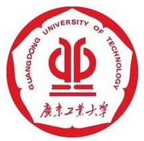

数 据 挖 掘 俱 乐 部
Data mining Club
| 成员 | 数据采集 | 数据清洗 | 数据探索 | 挖掘建模 | 模型部署 | 产品策划 |
|---|---|---|---|---|---|---|
| 13 级 | ||||||
| 14 级 | ||||||
| 15 级 | ||||||
数据挖掘小组由广东工业大学应用数学学院徐圣兵老师指导，主要成员为应用数学学院的同学。本小组旨在提高各位同学对课程学习的热情，同时达到学以致用的效果。
随着大数据时代的来临，数据挖掘小组的成立顺应了时代的潮流。由于数据挖掘属于新颖的学科，所以本小组成立的意义在于一方面可以为我们的同学往后的就业未雨绸缪，另一方面也为社会输送紧缺的人才。